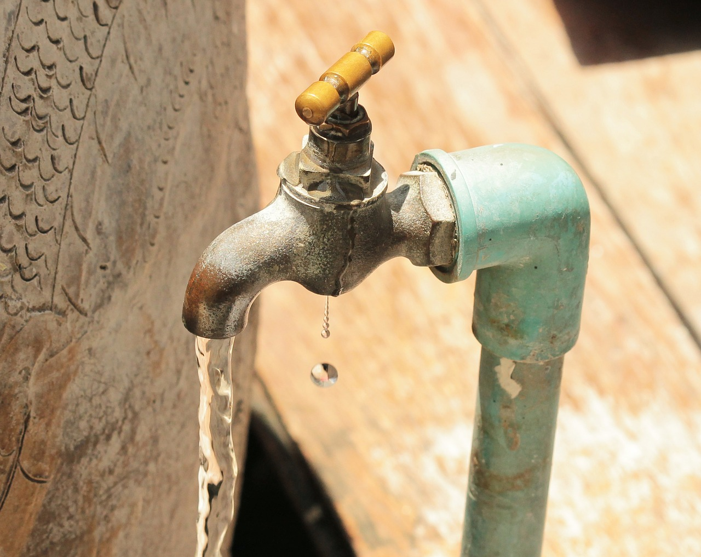

Průtoková očista a její následky

Nový rok si vyžádal lehkou úpravu životního stylu. Zjistil jsem, že jsem prostě daleko víc unavený a nervózní a tak nějak bez energie. Kde jsou ty časy, kdy jsem běhal půlmaratony… Takže jsem si říkal, že by to chtělo nějaký „detox".
A tak když se naskytla možnost strávit doma den o samotě (což je poměrně vzácné), rozhodl jsem opět po letech pro šankaprakšalánu.
Je to prastará a poměrně ultimátní jogínská technika, která spočívá v pití slané vody a cvičení, přičemž slaná voda vámi projde a pročistí vám střeva. Podrobnosti o šankaprakšaláně nebudu moc rozepisovat, kdo chce, patřičné info najde třeba v knihách od Lysbetha. Každopádně jsem byl zvědavý, zda se mi technika dobře povede. Přece jen jsem ji dlouho nepraktikoval. No povedla se. Den jsem zahájil asi půlhodinovým cvičením ásán a relaxací. Po šankaprakšaláně by alespoň den neměla následovat fyzická námaha, tak jsem si všechno odcvičil před ní. A pak už to jelo – sklenice slané vody, cvičení a tohle všechno šestkrát opakovat. Pak do toho přidat toaletu a dát ještě pár dalších sklenic… Poté dva talíře uvařené bílé rýže s máslem a večer trochu luštěnin opět s rýží. Ale výsledek super. Podobně jako dřív se efekt dostavil až druhý den, kdy se cítím jako znovuzrozený. Mám větší trpělivost s dětmi, jsem méně unavený a mám mnohem menší tendenci pít kávu a pivo. A přikládám pár rad pro lepší šankaprakšalánu:
- Zásadní je klid – je dobré si na to vyhradit celý den. Po očistě budete malátní a slabí, možná část dne prospíte. Nic by vás nemělo rozptylovat.
- Chce se to trochu připravit. Když večer před tím vypijete pět piv v hospodě a zajíte to hamburgerem a hranolkama, šankaprakšalána vás asi vyčistí, ale lépe vám nebude. Alespoň den před tím bez masa, bez alkoholu, bez kávy.
- Uvolnit se. Mám tu výhodu, že mi pití slané vody nevadí a libí se mi pozorovat, co to všechno se mnou dělá. Hodně lidí na fórech si stěžuje, že se jim celá procedura nepodařila (nenahodil se ten průtok celou trávicí soustavou). Je to asi proto že nebyli dost uvolnění. Pokud se to nepovede a voda zůstane v žaludku, je lepší ji vyblít. To je ostatně taky jogínská očista.
- Do hodiny po skončení se musí snít ta rýže s máslem. Jinak začnou trávicí šťávy naleptávat prázdné střevo a to nechceme.
- Celý den pak budete slabí – je to podobný pocit jako lehká kocovina. Patří to k tomu. Osobně jsem vždy víc použitelný až večer.
- Dost důležitý detail – provádět to na lačno. Obvykle ráno.
- Poslední sklenice vody už nemusí být slané. Jakmile funguje průtok, už čistá voda nevadí.
- Budete mít žízeň, pije se ale až po tom jídle. Jináč jde voda hned ven. Spodem samozřejmě.